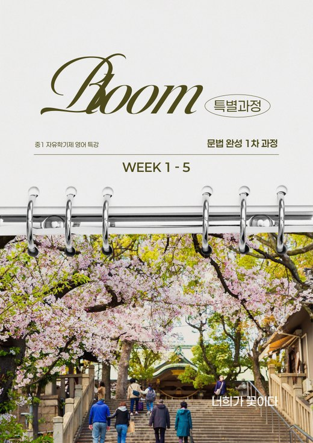
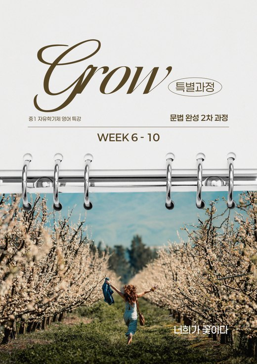
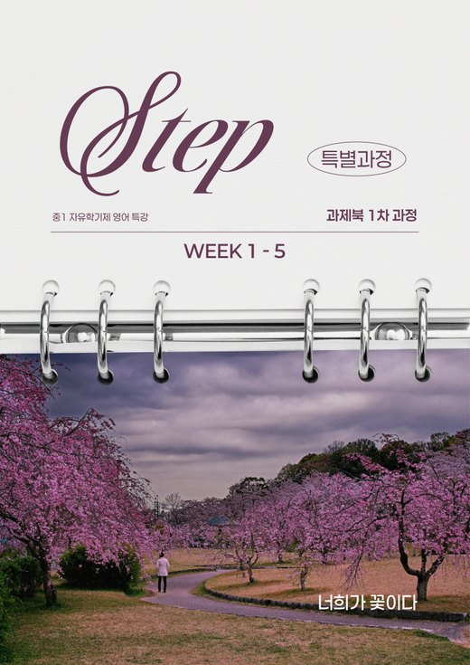

“중등에서 만들어진 학습의 기준은 고등에서 큰 차이를 만들어 냅니다.”
1. 우리 아이가 치르게 될 입시
| 연도 | 학년 | 이 시기에 일어나는 일 |
|---|---|---|
| 2027 | 중1 | 2022 개정 교육과정으로 배웁니다. 한 학기는 자유학기(지필 시험 없음), 이후 첫 정기 시험 |
| 2028 | 중2 | 문법과 독해 난도가 크게 오르는 학년, 중간·기말고사가 본격적으로 이어집니다 |
| 2029 | 중3 | 세종 고교 선택(원서 지원), 고등 과정 준비 시작 |
| 2030 | 고1 | 고교학점제, 고1 공통영어 내신은 5등급 상대평가(1등급 = 상위 10%) |
| 2032 | 고3 | 11월 수능 응시(2033학년도 대입) |
※ 2028학년도 대입 개편안(현재 확정안) 기준입니다. 이 학년의 대입 세부 사항은 앞으로 바뀔 수 있습니다.
1. 우리 아이가 치르게 될 입시
| 중학교 | 고등학교(고1 공통영어) | |
|---|---|---|
| 평가 방식 | 성취평가(절대평가) A~E | 5등급 상대평가, 성취도 함께 표기 |
| 가장 높은 성적 | 90점을 넘으면 모두 A | 같은 학년 상위 10%만 1등급 |
| 시험 범위 | 교과서 본문 중심 | 교과서에 부교재, 모의고사 지문이 더해집니다 |
| 문항 | 본문을 그대로 묻는 문항이 많습니다 | 지문을 바꾼 변형 문항, 어법·영작 서술형 |
성적표의 A는 기준 점수를 넘었다는 뜻입니다. 고등학교에서는 같은 학년 안의 순위로 등급이 나뉘기 때문에, 중학교 3년 동안 A 안에서도 어디쯤에 있는지를 따로 확인해 두어야 합니다.
1. 우리 아이가 치르게 될 입시
| 시험 | 1등급 비율 |
|---|---|
| 2024학년도 수능 | 4.71% |
| 2025학년도 수능 | 6.22% |
| 2026학년도 수능 | 3.11% |
※ 한국교육과정평가원 채점 결과 발표 기준
어려운 해에도 버티는 힘은 문장 구조를 정확히 읽는 습관에서 나옵니다. 이 습관은 문법 용어를 처음 배우는 중1 때 잡는 것이 가장 수월합니다.
2. 중1 영어, 어떤 방향으로 준비하나
시험이 없는 한 학기에 문법 기초와 읽는 습관을 만들어 두면 첫 정기 시험과 중2 문법이 훨씬 수월해집니다.
2. 중1 영어, 어떤 방향으로 준비하나



시험이 없는 동안 중2에서 처음 만나는 핵심 문법을 미리, 깊게 다룹니다. 자유학기 일정에 맞춰 학원에서 직접 만든 교재입니다.
2. 중1 영어, 어떤 방향으로 준비하나
| 영역 | 중1에서 하는 일 | 고등에서 이어지는 곳 |
|---|---|---|
| 문법 | 문장의 뼈대(주어, 동사, 목적어, 수식어)를 세우는 문법 | 내신 어법 문항, 영작 서술형 |
| 독해 | 문장을 끊어 읽고 해석하는 힘, 짧은 글의 흐름 파악 | 수능 빈칸·순서·삽입, 내신 변형 지문 |
| 어휘·듣기 | 중1~2 필수 어휘, 중학 영어듣기 평가 대비 | 고등 어휘량, 수능 듣기 17문항 |
| 내신·수행 | 학교별 수행평가, 교과서 단원별 주간 내신 | 고등 학교별 내신 대비 |
※ 너희가 꽃이다는 7년간 세종 고등 내신과 수능을 지도한 자료를 바탕으로 중등 과정을 설계합니다.
2. 중1 영어, 어떤 방향으로 준비하나
초등 영어와 중등 영어를 잇는 단계. 문장이 만들어지는 원리를 이해하고 짧은 지문으로 「문장을 보는 눈」을 만듭니다.
글자 하나하나를 들여다보며 문장의 뼈대를 세우는 문법, 문장을 해석하는 힘으로 독해 기초, 중1~2 필수 어휘와 듣기.
흩어진 문법을 카테고리로 묶어 하나의 구조로 완성. 지문 구조와 유형별 독해, 중등 전체 어휘 순환.
지문 속 문법 활용, 논리와 근거로 문장을 분석하는 독해, 고등 내신·수능 어휘와 수능 듣기.
1년 흐름 학기마다 정규 커리큘럼을 진행하고, 학교 시험 기간에는 진도를 잠시 멈춰 학교별 내신 대비를 한 뒤 다시 이어 갑니다. 6월과 12월에는 BigTest로 한 학기를 점검합니다.
2. 중1 영어, 어떤 방향으로 준비하나
| 영역 | Bud Core | Bud Top |
|---|---|---|
| 문법 | [쎄듀] 천일문 중등 Grammar Level 1 | [해커스] 기출로 적중 해커스 중학영문법 1학년 |
| 독해 | [능률] Reading Inside Starter | |
| 어휘 | [쎄듀] 어휘끝 중학 고난도 1000 | |
| 듣기 | [해커스] 중학영어듣기 모의고사 24회 Level 1 | |
※ 2027 중등 1학기 교재 라인업 기준이며, 학습 수준에 따라 교재가 일부 조정될 수 있습니다.
3. 수업과 관리를 함께 하는 구조
| 방식 | 강점 | 빈틈 |
|---|---|---|
| 혼자 공부 인강, 문제집 | 원하는 속도로, 부담 없이 시작할 수 있습니다 | 계획을 이어 가기 어렵고, 틀린 이유를 점검해 줄 사람이 없습니다 |
| 강의식 학원 | 체계적인 커리큘럼, 학교 시험 정보, 또래와 함께하는 기준 | 학생 한 명 한 명의 빈틈까지 챙기기 어렵습니다 |
| 과외 | 학생에게 맞춘 설명과 밀착 관리 | 커리큘럼과 시험 자료의 폭이 좁고, 또래 사이 위치를 알기 어렵습니다 |
중1에게 필요한 것은 체계적인 진도와 학생별 점검이 함께 가는 구조입니다. 진도만 있으면 빈틈이 쌓이고, 점검만 있으면 3년의 방향이 흐려집니다.
3. 수업과 관리를 함께 하는 구조
학년과 레벨별 정규반, 강의형
학생 한 명씩, 과외식
3. 수업과 관리를 함께 하는 구조
3. 수업과 관리를 함께 하는 구조
| 노트 | 무엇을 적나요 | 무엇이 남나요 |
|---|---|---|
| 개념 노트 | 수업의 제목과 개념(정의)을 먼저 정리합니다 | 그날 배운 내용의 큰 틀을 스스로 파악합니다 |
| 오답 노트 | 틀린 문항과 틀린 이유를 적습니다 | 약한 부분을 정확히 알고, 같은 실수를 줄이는 습관 |
| 독해 노트 | 소재와 주제, 핵심 문장 필사와 해석, 요약, 모르는 단어 | 지문 전체를 읽어 내는 힘과 나만의 어휘장 |
노트는 수업 중에 받아 적는 기록에서 끝나지 않습니다. 케어 데이에 강사가 노트를 함께 보며 이해한 것과 외운 것을 구분해 줍니다.
3. 수업과 관리를 함께 하는 구조
중2 Flower Core반의 목표는 개념을 이해하고, 그 바탕에서 문제를 정확하게 파악하기입니다.
내신 시험 100점을 받은 학생에게는 포상이 있습니다. 6월 BigTest 결과로 여러 학생이 Top반으로 올라가 지금도 좋은 성적으로 공부하고 있습니다.
4. 가정에서 함께 해 주실 일
중1에게 가장 오래 남는 것은 매일의 작은 습관입니다. 학원과 가정이 같은 방향을 보고 있으면 아이도 덜 흔들립니다.
“중등에서 만들어진 학습의 기준은 고등에서 큰 차이를 만들어 냅니다.”
11월 23일(월) 예비중1 영문법 5주 완성 개강 → 월/수 또는 화/목 3:30~5:00
2027년 1월 중1 정규 Bud 과정 시작 → 월/수 또는 화/목 5:00~7:30, 금요일 케어 데이